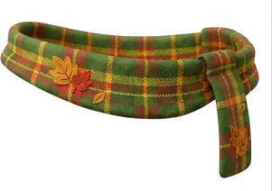

自己紹介
はじめまして、長谷川耀俊（Aki_Ha）です。
関西大学 環境都市工学部 エネルギー環境・化学工学科の学部3年です。化学工学を学びながら、生成AIを使った開発とコミュニティづくりに打ち込んでいます。
「専攻の知識 × AI」で身の回りの課題を解くのが好きで、講義のスキマ時間もだいたい何か作っています。
得意・好きなこと
- ピアノとドラムを習っていました
- マリンバのソロで大阪府大会 🏅
- ギターはたまに練習中
- シャツ以外の春夏向け長袖トップスを一生探してる
- オーディオと服は沼
大切にしてること
- どんな人でもリスペクトできるところを探す
- 「だって」と「でも」を使わない
- 毎日を幸せに！ポジティブに！
苦手
- 早寝早起き
- コツコツゆっくり物事を進めること （夏休みの宿題は休みに入る前に終わらせるタイプ。終わらなかったら最後までやらず、試験の素点でどうにかしてました）
- シャトルラン
頑張りたいこと
日記を続けること。コツコツが苦手なので、まずはここから。
コミュニティでの活動
全国から選出された31名のコミュニティアンバサダーの一人として、複数の委員会で運営に関わっています。
COMMUNITY AMBASSADOR
コミュニティアンバサダー
Google AI 学生コミュニティの運営メンバー。学生同士が生成AIの活用アイデアを交換できる場を、企画と発信で盛り上げています。
DISCORD COMMITTEE
Discord特別委員会
コミュニティの拠点である Discord サーバーの運営チーム。このメンバー紹介サイトの企画にも参加しています。
VICE LEADER
遊び場委員会 副リーダー
「まずは楽しく」を大事に、コミュニティの遊び心ある企画を仕掛ける委員会。副リーダーとして運営しています。
FOUNDER
西日本AI Co-Innovation委員会 創設・運営
西日本の学生同士がつながり、一緒にAI活用を試せる場をゼロから立ち上げました。地域を越えた共創を目指しています。
TECH HUB
Google AI Tech Hub
技術好きのメンバーが集まる Tech Hub に所属し、開発ネタや検証結果を共有してきました。
WORKS
つくったもの

家庭教師マッチングプラットフォーム
保護者と家庭教師をつなぐ Web サービスを個人開発しています。体験授業の依頼から日程調整、契約の同意、決済までを一気通貫で扱う、実運用を見据えたプロダクトです。
履修AI「course-navigator」
大学の履修選択を支援するAI。科目のつながりをグラフDBで持たせた GraphRAG 構成です。
NPUローカルAI環境
AI PC の NPU で動くローカル音声認識環境を構築。10秒の音声を約3.2秒で文字起こしできます。
intro-topic-bot
自己紹介の投稿から興味を読み取り、その人が話しやすいお題を雑談チャンネルにそっと投下する Discord Bot。
chem-tools
化合物名から化学構造式の画像を自動生成するツール。専攻の化学とAIツール開発の掛け合わせです。
Antigravity ハンズオン教材
Google の AI コーディングエージェント「Antigravity」を約2時間で学べるハンズオン資料を制作・公開。コミュニティでの学び合いにも使っています。